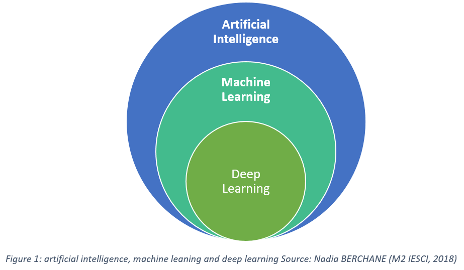

Introduction
In today’s digital world, terms like Artificial Intelligence (AI), Machine Learning (ML), and Deep Learning (DL) appear everywhere — from social media to smart devices. This guide explains their differences with examples and use cases.
Read about Machine Learning and Deep Learning or jump to the comparison table.
What Is Artificial Intelligence (AI)?
Artificial Intelligence focuses on building systems that can think, reason, and act like humans.
Examples of AI:
- Voice assistants (Siri, Alexa, Google Assistant)
- Recommendation engines (Netflix, YouTube, Amazon)
- Chatbots and smart home devices
Most modern AI systems rely on Machine Learning.
What Is Machine Learning (ML)?
Machine Learning enables computers to learn from data without being explicitly programmed.
Types of Machine Learning:
- Supervised Learning – learns from labeled data
- Unsupervised Learning – finds hidden patterns
- Reinforcement Learning – learns through feedback
Explore Deep Learning to see how ML evolves into more complex neural networks.
What Is Deep Learning (DL)?
Deep Learning uses Artificial Neural Networks (ANNs) inspired by the human brain to extract complex features from data.
- Facial recognition
- Self-driving cars
- Speech and image recognition
AI vs ML vs DL — Key Differences
| Feature | AI | ML | DL |
|---|---|---|---|
| Definition | Machines mimic human intelligence | Machines learn from data | Neural networks learn from massive data |
| Goal | Simulate human behavior | Make predictions | Learn deep representations |
| Data Dependency | Small data | Moderate data | Massive data |
| Hardware | Normal computer | Moderate | High (GPUs) |
| Human Intervention | High | Medium | Low |
FAQs
Is Machine Learning the same as Artificial Intelligence?
No, ML is a subset of AI that enables systems to learn from data.
Can Deep Learning exist without Machine Learning?
No, Deep Learning is a subset of ML using neural networks.
Which should I learn first?
Start with AI basics, then ML, and finally DL.
Conclusion
Artificial Intelligence, Machine Learning, and Deep Learning are the backbone of modern technology. Learn how they shape the world in our comparison section above.